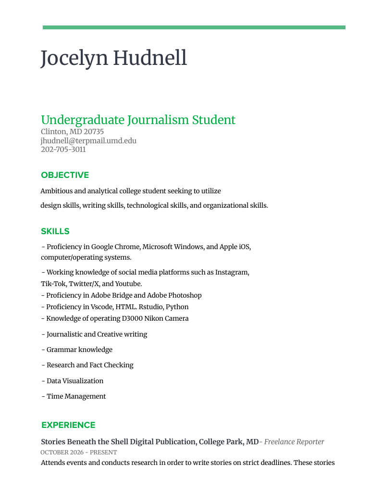
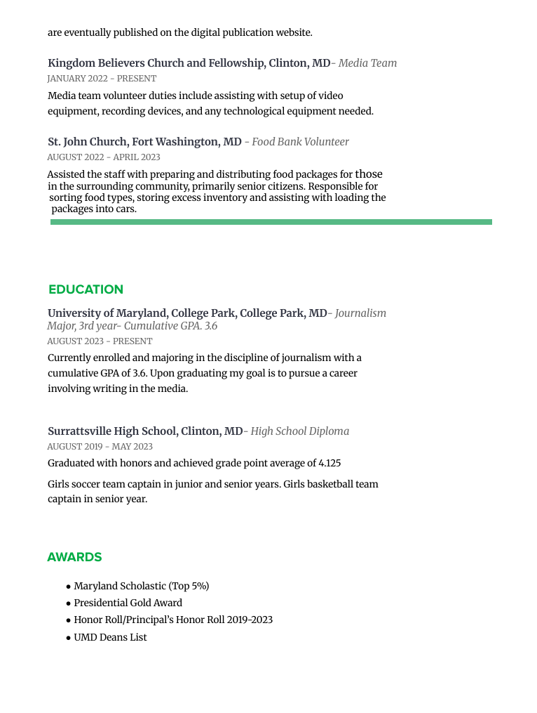

UMD students share favorite literature, personal writings at Tawes Hall book events https://storiesbeneaththeshell.com/2026/10/10/umd-students-share-favorite-literature-personal-writings-at-tawes-hall-book-event/
UMD community discusses pedestrian, driving safety concerns as DOTS celebrates Safety Month https://storiesbeneaththeshell.com/2026/10/26/umd-community-discusses-pedestrian-driving-safety-concerns-as-dots-celebrates-safety-month/
Email: jhudnell@terpmail.umd.edu
Number: 202-705-3011